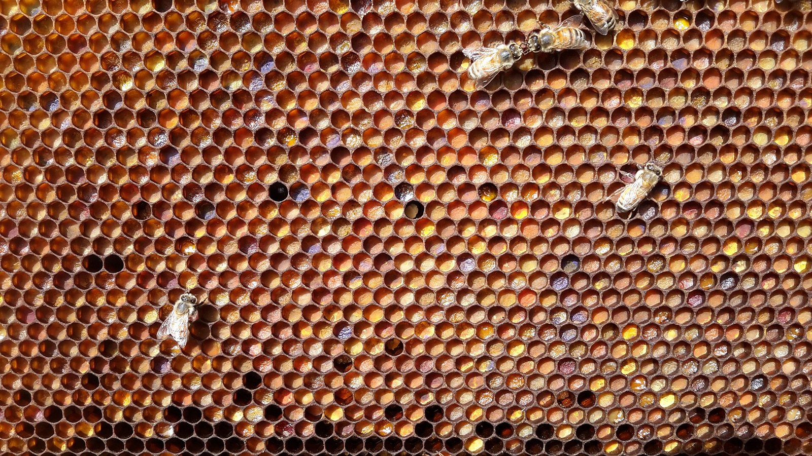

CURIOSIDADES DE LA VIDA•EP. 03
¿SABÍAS QUE LAS ABEJASBAILAN
PARA DECIRSEDÓNDE HAY COMIDA?
CUANDO UNA ABEJAENCUENTRA FLORES,
VUELVE A LA COLMENAY BAILA
DIBUJANDOUN OCHO.
EL ÁNGULO DEL BAILEINDICA LA DIRECCIÓN
RESPECTOAL SOL.
Y HAY ALGO TODAVÍAMÁS SORPRENDENTE.
CUANTO MÁS TIEMPOMUEVE EL ABDOMEN,
MÁS LEJOSESTÁN LAS FLORES.
ES COMO UN MAPAHECHO CON EL CUERPO.
¿CONOCÍASESTE SECRETO?